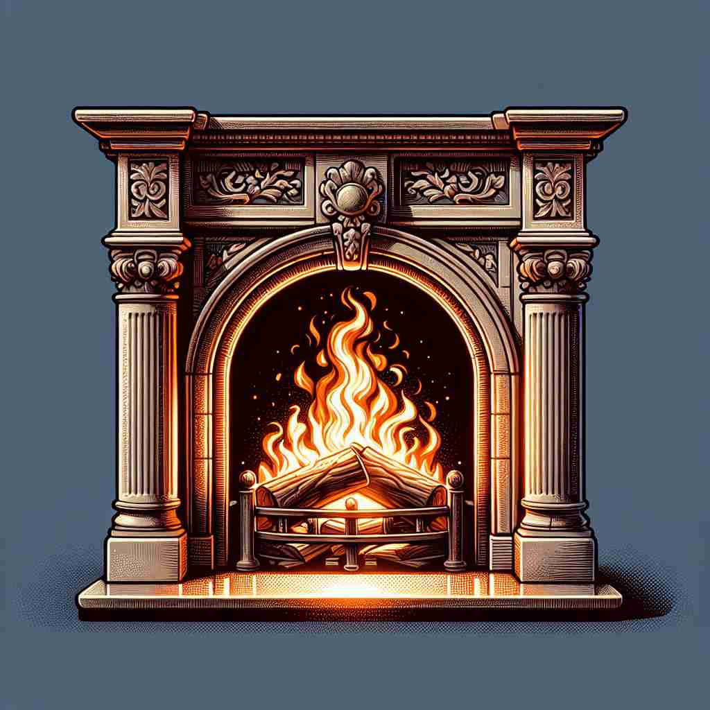

💬 We like to sit by the fireplace on cold winter nights. 我们喜欢在寒冷的冬夜坐在壁炉旁。

💬 The family likes to sit by the fireplace on cold evenings. 家人喜欢在寒冷的夜晚坐在壁炉旁。

💬 They like to sit by the fireplace during winter evenings. 他们喜欢在冬天的晚上坐在壁炉旁。
💬 We like to sit by the fireplace on cold winter nights. 我们喜欢在寒冷的冬夜坐在壁炉旁。
💬 The family likes to sit by the fireplace on cold evenings. 家人喜欢在寒冷的夜晚坐在壁炉旁。
💬 They like to sit by the fireplace during winter evenings. 他们喜欢在冬天的晚上坐在壁炉旁。
🧠 想象一个房间里专门用来生火的地方，这就是'fireplace'的核心含义。从这个核心概念出发，它可以扩展指代壁炉周围的区域，以及壁炉开口周围的装饰结构。通过联想一个实体的壁炉及其周边，你可以轻松记住这个词的各种用法。
🔈 ['faɪəpleɪs]
🗝️ n. a specially built place in a room where you can have a fire 房间内专门建造的可以生火的地方
🎭 在一个舒适的客厅里，中央摆放着一个经典的石头壁炉。冬夜里，壁炉里的火焰欢快地跳跃，为整个房间带来了温暖和光明，让人感受到家的温馨。
💬 We sat by the fireplace to keep warm. 我们坐在壁炉旁取暖。
🌳 由基本词根 'fire'（火）和后缀 'place'（地方）组成，构成名词，表示 '壁炉，火炉'。
💡 记忆 'fireplace' 可以联想为 '放置火的地方'，即壁炉，通过直接将 'fire' 和 'place' 的意思合并，更容易记住这个词的含义。
🗝️ n. the area immediately around or in front of a fireplace 壁炉周围或前面的区域
🎭 在一个古色古香的别墅中，壁炉前方铺着柔软的地毯，上面有几本书和一个搁脚凳。这个区域被家人当作一个放松和交谈的地方，火光映衬下的地毯边缘显得特别温暖。
💬 They placed a rug in front of the fireplace. 他们在壁炉前放了一块地毯。
🤔 扩展到壁炉周围的区域
🗝️ n. a decorated structure around a fireplace opening 壁炉开口周围的装饰结构
🎭 在一个装潢华丽的大厅中，壁炉开口周围装饰着精美的大理石雕花，顶部还摆放了几盆绿色植物。这种装饰结构为房间增添了优雅的气息，使壁炉不仅是一个功能性的存在，更是一件艺术品。
💬 The marble fireplace added elegance to the room. 大理石壁炉为房间增添了优雅。
🤔 指代壁炉周围的装饰结构